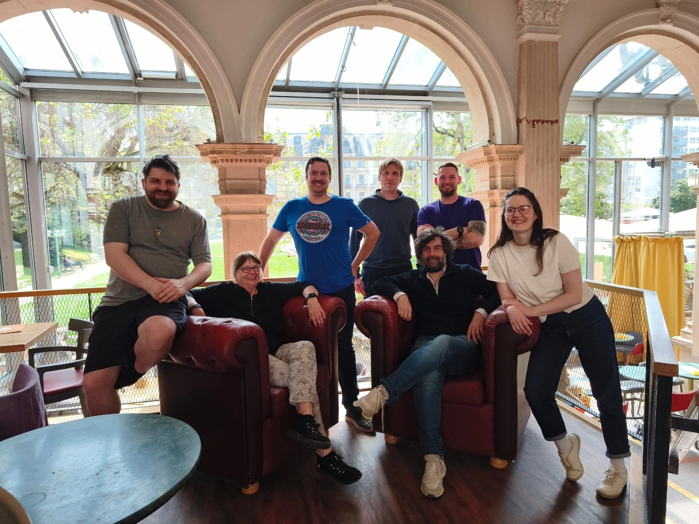
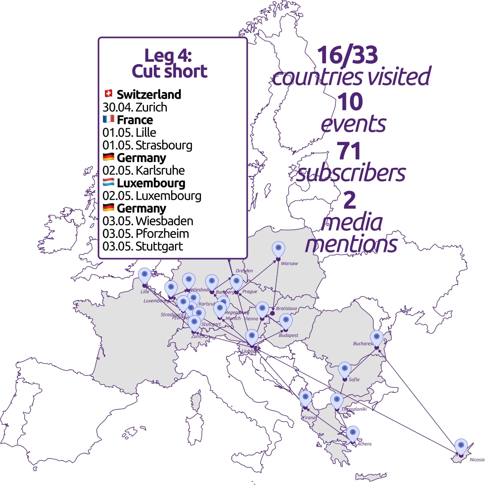
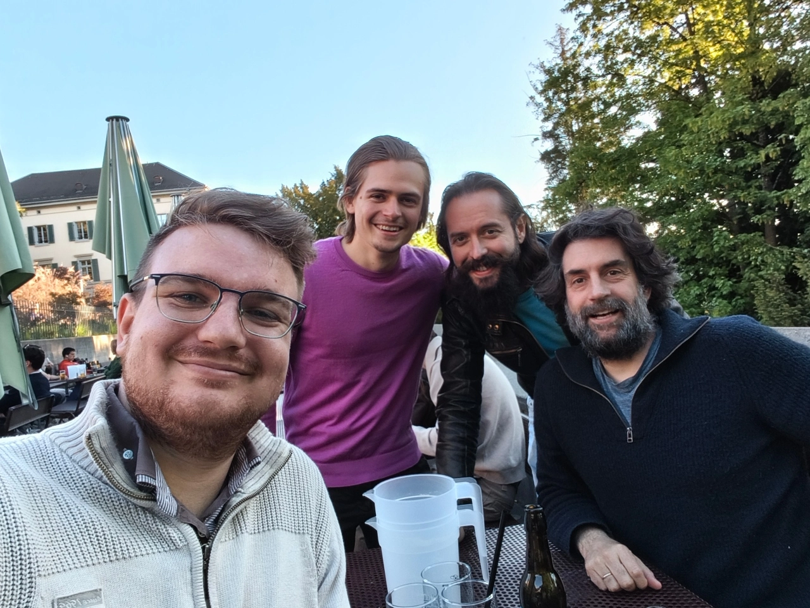
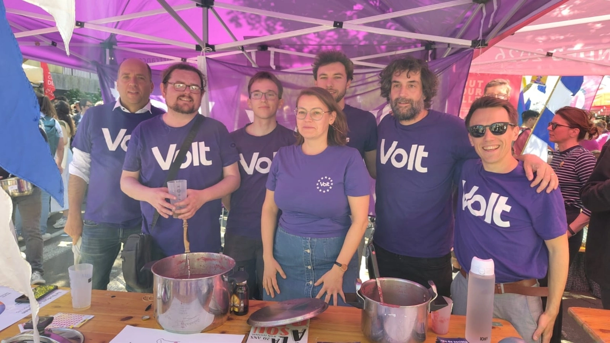
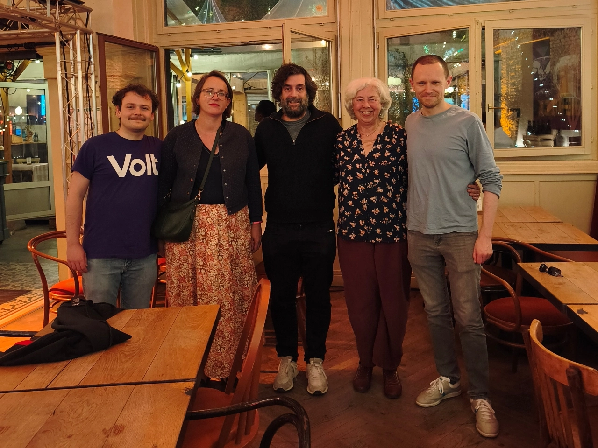
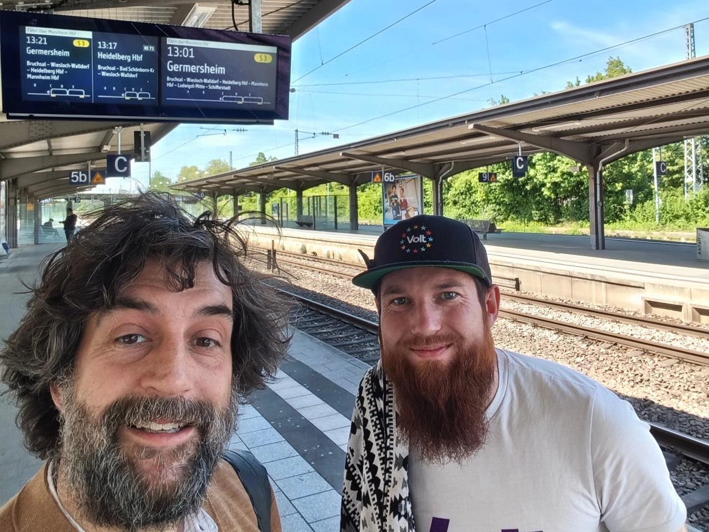
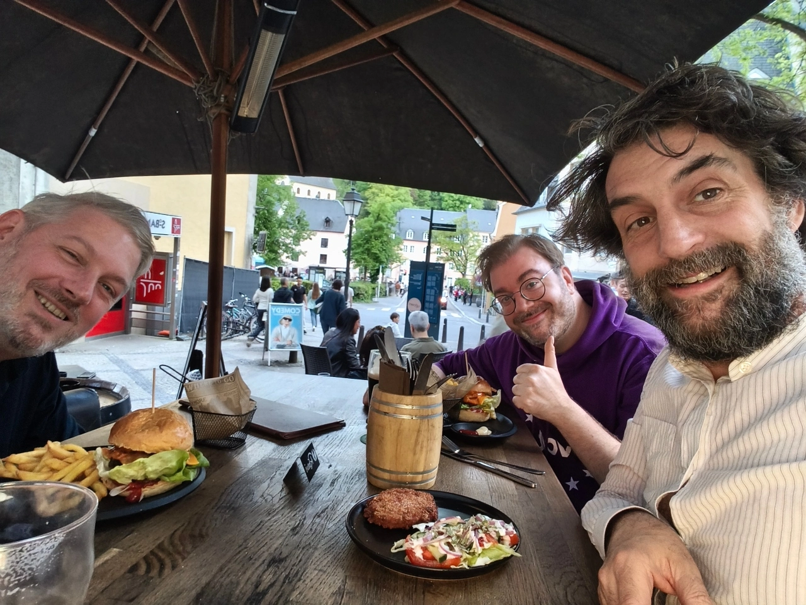
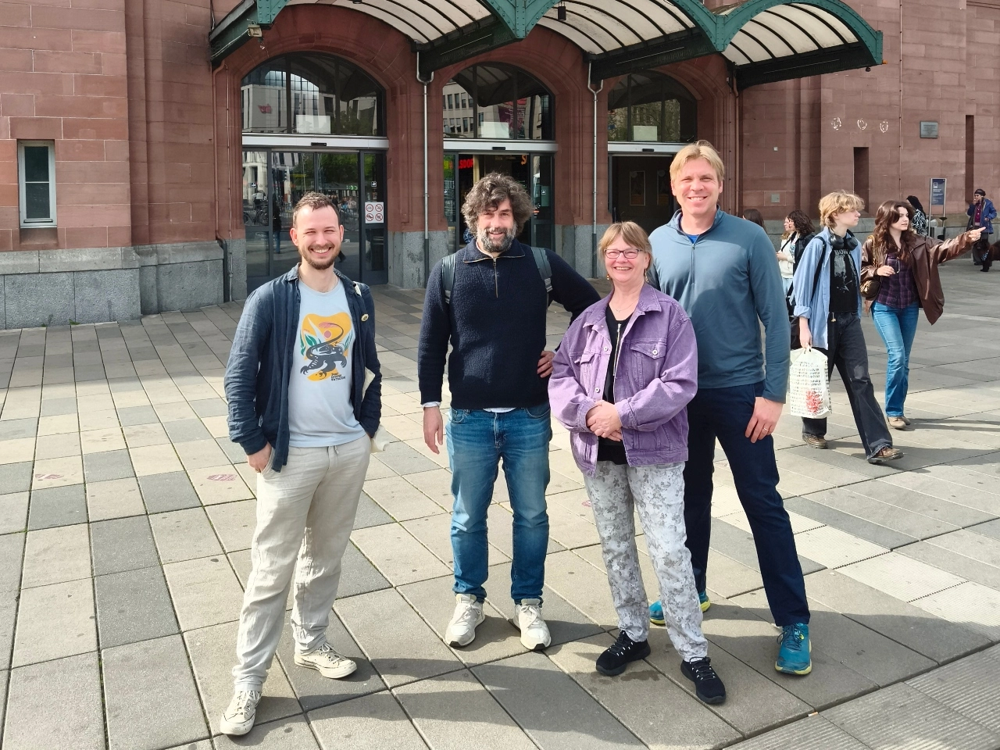
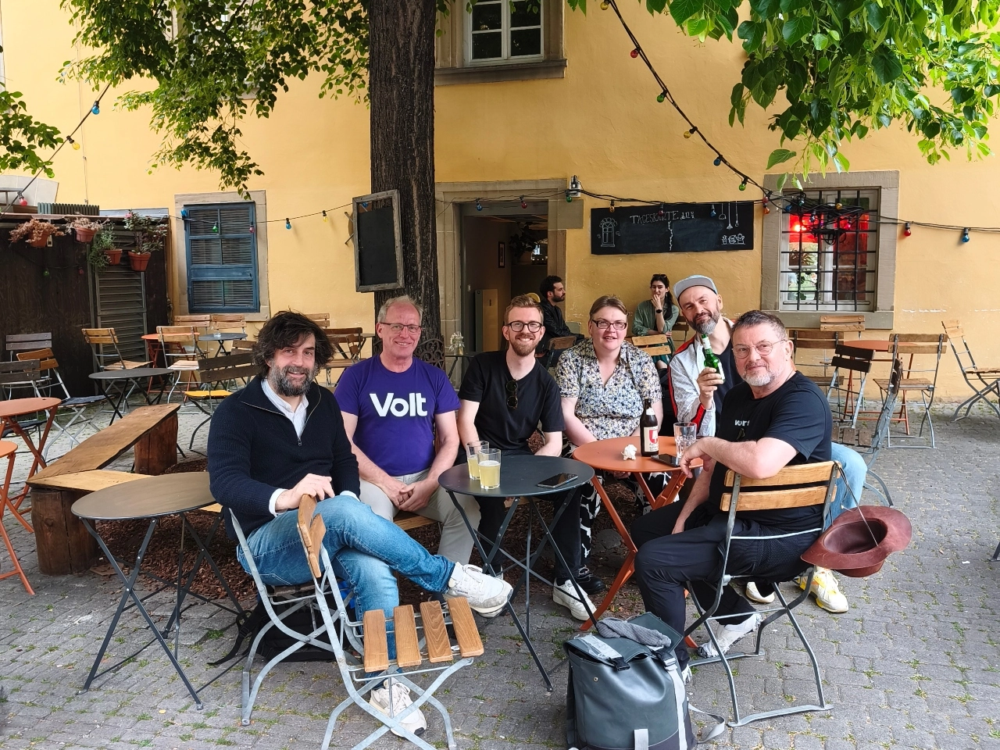

Une campagne transnationale: #4 Être écourté

Voici le retour de la quatrième étape de ma tournée transnationale, de Zurich jusqu’à Stuttgart. C'est la phase interrompue de ma campagne, la Commission électorale ayant demandé à tout le monde de suspendre ses activités. Si vous souhaitez en savoir plus sur les raisons de ma candidature, rendez-vous sur mon site web, où vous trouverez plus d’informations sur ma campagne et mon parcours.
Récits de la tournée transnationale : retour aux sources

Zurich, Suisse 🇨🇭

Après une semaine de pause, j'étais prêt à lancer ma campagne le 1er mai en passant par Zurich pour rendre visite à ma famille et saluer Lars, de notre équipe slovène. Quelques membres de Volt Suisse se sont également joints à nous pour discuter du référendum en cours visant à limiter la population suisse à 10 millions d'habitants, contre 9 millions aujourd'hui.Il s’agit d’une campagne populiste typique, allant jusqu'à envoyer des brochures aux ménages pour affirmer que plus d'immigration nécessiterait davantage d'espaces verts pour la construction, plus de routes pour les voitures, etc.
Nous avons convenu que la Suisse était déjà « mittendrin in nid dübii » – au cœur de l’Europe, mais sans y participer vraiment. Avec ce référendum, le pays s’isolerait encore davantage. Comment l’Europe devrait-elle réagir ? Un pays devrait-il se contenter de profiter du commerce tout en excluant les autres aspects ? La Suisse devrait-elle, en contrepartie, être autorisée à participer à l’Eurovision, au programme Erasmus ou au financement Horizon ? Après tout, il y a toujours deux revers d’une médaille.
Volt Suisse soutient bien sûr la campagne du « non », plaidant pour que le pays renforce ses liens avec l’Union européenne plutôt que de les rompre. Ce serait l’occasion pour Volt Europa de prendre position. Aucun autre pays ne le fait. Pourquoi le feraient-ils ? Ils ne pensent qu’à l’échelle nationale et ne voient pas vraiment l’Europe au-delà de leurs frontières.
Après avoir mangé un peu de rösti pour cocher mon défi culinaire local, je me suis dirigé vers la gare routière.
Lille, France 🇫🇷

J'ai pris un autre bus de nuit pour Lille, car je ne voulais pas manquer le 1er mai et « La Louche d'Or » : le festival traditionnel de la soupe, où des associations et des partis politiques préparent de la soupe que plusieurs milliers de visiteurs peuvent déguster. Nous y participons avec Volt Lille depuis de nombreuses années – chaque fois avec une soupe violette – car c’est une excellente occasion de parler politique autour d’un gobelet et d’un tract.
J’étais heureux de voir mon ancienne équipe de Lille devenir un pilier de l’événement, avec notre stand situé à côté de celui des socialistes, avec lesquels nous nous sommes également présentés aux récentes élections municipales. Notre tête de liste a failli être élue et j’espère qu’elle parviendra tout de même à entrer au conseil municipal si quelqu’un d’autre se retire.
Cela montre à quel point un travail continu et une présence régulière contribuent petit à petit à construire notre image de marque 💜. Nous avons bien sûr discuté de politique, des élections présidentielles de l’année prochaine et des élections législatives qui suivront juste après. C’est toujours un défi de présenter de bons candidats, et un an est un délai suffisant pour préparer des candidats locaux solides.
C’était également formidable de rencontrer Oliver Forberich, autre candidat allemand au Bureau de Volt Europa candidatant depuis Volt France comme moi, et de discuter de nos idées respectives.
Je ne pouvais rester que quelques heures, mais je devais bien sûr caser un Welsh – après avoir vécu 15 ans à Lille, mon plat français quasi-typique –, ce qui a rendu la course vers la gare pour attraper ma correspondance vers Strasbourg un peu plus difficile…
Strasbourg, France 🇫🇷

Le 1er mai, ma tournée ne m'a pas seulement conduit à Lille, mais aussi à Strasbourg pour lancer ma campagne. Je suis arrivé à temps pour tourner des vidéos devant le Parlement avant de retrouver l'équipe de Strasbourg autour de tartes flambées. J’étais ravie que Camille Marteau, notre élue récemment élue à Strasbourg, ait également pu se joindre à nous. J’ai ainsi pu découvrir les premiers pas d’une conseillère municipale ainsi que les défis liés à la volonté d’avoir un impact dans plusieurs domaines en tant que seule conseillère de Volt.
Nous avons discuté de la campagne de l’équipe de Strasbourg et de l’importance d’actions ciblées et de la création de réseaux avec d’autres forces politiques, ce qui peut également servir de bonne pratique ailleurs en France et même au-delà. La collecte de fonds a été un autre sujet abordé, car Volt Europa n’a reçu qu’une poignée de dons importants au cours de l’année. Nous avons convenu qu’il était essentiel d’avoir des histoires et des projets convaincants que les gens auront envie de soutenir et auxquels ils voudront contribuer, et d’être cohérents dans la constitution d’un réseau de petits donateurs.
C'était formidable d'échanger avec une autre de nos équipes françaises actives. Se faire élire en France est difficile pour les petits partis politiques et je suis vraiment fier que l'équipe de Strasbourg ait réussi – tout comme Lille finira par le faire.
J'avais déjà un dernier trajet prévu pour cette journée, qui m'emmenait de Zurich à Bruxelles, puis à Lille et à Strasbourg ; j'ai donc poursuivi mon chemin jusqu'à Karlsruhe, où Fabian a eu la gentillesse de m'offrir un logis pour passer la nuit.
Karlsruhe, Allemagne 🇩🇪

Je n'ai dormi que quelques heures et n'ai passé qu'une demi-journée à Karlsruhe, mais j'étais entre de bonnes mains : Fabian m'a fait découvrir la ville, les projets municipaux et les défis auxquels il est confronté en tant que conseiller municipal.
Il faut rendre à César ce qui appartient à César : l'équipe de Volt Karlsruhe participe à tous les événements publics où les représentants de la ville devraient être présents. Je pense que ce travail « politique » est un complément essentiel au travail « législatif ». Être accessible et échanger avec les citoyens, participer à des événements et développer notre réseau est essentiel si nous voulons faire passer Volt d’un mouvement de niche à un parti capable de jouer un rôle plus important. Et pas seulement en politique locale.
Nous avons terminé par des Käsespätzle et une bière pour faire le plein de calories avant de poursuivre notre voyage.
Luxembourg, Luxembourg 🇱🇺

Depuis Karlsruhe, je me suis rendu au Luxembourg pour dîner avec l'équipe locale. J'ai dû passer par la gare de Sarrebruck, qui était prise d'assaut par des supporters de football, ce qui a entraîné d'importants retards des trains et des bus. Ce n'était pas l'idéal compte tenu de mon emploi du temps serré, mais j'ai tout de même réussi à passer la frontière à temps.
Cela faisait quelques jours que Volt Luxembourg était entré dans les sondages nationaux, j'avais donc hâte de discuter de politique. J'ai appris qu'il était courant que des célébrités « tirent » les listes et qu'une fois élues, elles étaient remplacées par la personne qui occuperait effectivement le poste. Il était également très difficile de présenter une liste complète pour les élections législatives, car seuls les citoyens luxembourgeois résidant au Luxembourg peuvent se présenter comme candidats. Le pays affiche l'un des taux les plus élevés de citoyens de l'UE non-luxembourgeois (47 % de la population totale), ce qui fait du droit de vote pour ces derniers un véritable sujet de débat qui continue d'être bloqué.
Une dernière note positive : au Luxembourg, le 9 mai 🇪🇺 est un jour férié. C'est la première fois que j'entends parler d'un État membre ayant mis en place l'une des mesures que je considère comme essentielles pour rendre l'Europe plus visible auprès du grand public.
C'était formidable de rencontrer l'équipe, je leur suis très reconnaissant pour l'organisation et espère les revoir bientôt si tout se passe bien.
Wiesbaden, Allemagne 🇩🇪

Après quelques nuits blanches passées à faire des allers-retours au Luxembourg, il me restait encore une journée avant de prendre un train de nuit bien mérité reliant Stuttgart à Ljubljana. Mais d’abord : rendez-vous avec Volt Wiesbaden pour un brunch.
L’équipe est venue me chercher à la gare, qui donne directement sur un parc, une excellente idée ! J'ai découvert l'histoire de la ville, ses thermes et ses sources d'eau – que nous avons d'ailleurs goûtées –, ainsi que le déclin des hôtels locaux, qui se transforment peu à peu en appartements. Le brunch était également excellent. J'ai eu l'occasion de discuter de mes projets pour la coprésidence et j'ai beaucoup appris sur la nécessité pour notre infrastructure Volt de suivre le rythme de notre croissance et de réduire notre dépendance vis-à-vis des fournisseurs non européens.
J'étais ravi que tant de membres se soient présentés pour un brunch matinal et j'ai apprécié leurs commentaires et leurs recommandations. La tête pleine d'idées, je suis reparti pour Stuttgart avec une petite halte à Pforzheim pour saluer l'équipe locale de Volt Pforzheim. Nous devrions vraiment visualiser tous les événements sur une carte afin qu'il soit plus facile de trouver une équipe Volt organisant quelque chose à proximité.
Stuttgart, Allemagne 🇩🇪

La dernière étape de cette partie du voyage était Stuttgart. L'équipe de Volt Stuttgart est venue me chercher à la fameuse gare « Stuttgart21 », qui est encore loin d'être achevée mais qui dispose désormais d'un sentier de randonnée officiel de 1,3 km permettant de rejoindre les quais depuis l'entrée.
Nous avons visité la ville avec l’équipe locale et les conseillers municipaux, et j’ai découvert les projets visant à redynamiser les environs de la gare, en créant des espaces plus animés et en redonnant vie à des quartiers laissés à l’abandon – le tout malgré les coupes budgétaires dues à la forte baisse des revenus d’une industrie automobile en difficulté. Nous avons discuté de la manière dont une plus grande visibilité au niveau national et européen pourrait également donner un coup de pouce aux équipes locales et aux idées pour créer une dynamique en vue des prochaines élections.
Je n’ai pas pu rester trop longtemps pour ne pas rater mon train, mais j’ai parcouru la moitié du sentier de randonnée et j’ai plus ou moins dormi jusqu’à mon arrivée à Ljubljana. Un repos bien mérité avant la prochaine étape, sur laquelle je me trouve actuellement.
Ce fut un voyage court mais éprouvant, et le prochain sera encore plus long. J’ai eu quelques jours pour recharger mes batteries à Ljubljana, avant de commencer à parcourir les Pays-Bas et une partie de l’Allemagne. Restez à l’écoute et merci de m’avoir lu.
Restez à l'écoute pour savoir comment ça s'est passé. Merci de m'avoir lu et de soutenir ma campagne 💜.
Sven